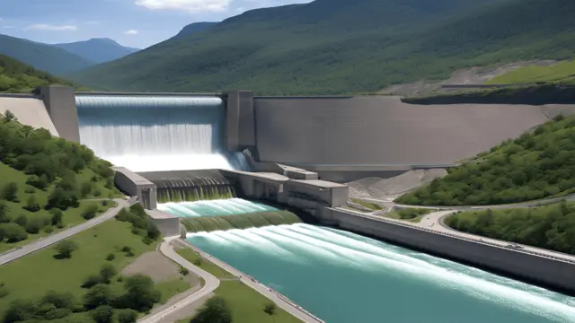
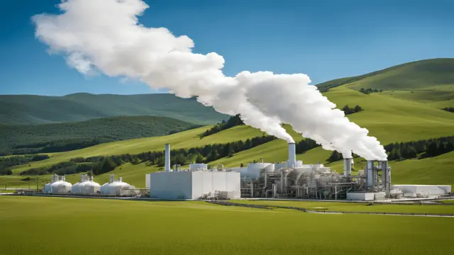
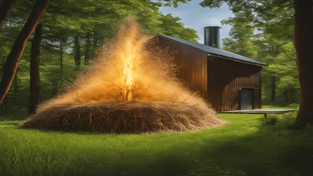
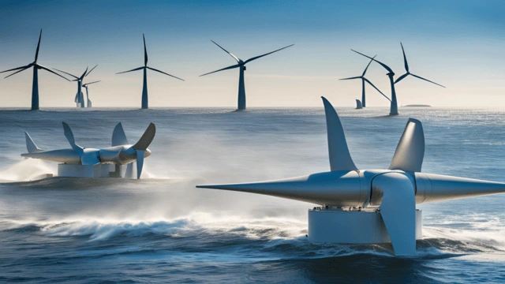

1. Solar Energy
Solar energy captures sunlight and converts it into usable forms of power. Key technologies include:
Photovoltaic (PV) Panels: Commonly installed on rooftops, fields, and even floating on water bodies, PV panels are versatile and increasingly efficient. Advances in materials, such as perovskite cells, are pushing efficiency higher while reducing costs. Solar farms, with thousands of panels, can supply energy to entire communities.
Solar Thermal Systems: These systems are used not only for generating electricity but also for applications like water heating and industrial processes. Concentrated Solar Power (CSP) systems, which use mirrors to focus sunlight on a single point, can store heat for use during cloudy periods or nighttime, providing a steady energy supply.
Solar energy is environmentally friendly, requires minimal maintenance, and is ideal for areas with high sunlight availability, though energy storage systems (batteries) are necessary for nighttime use.
2. Wind Energy
Wind energy converts the kinetic energy of moving air into electricity. Modern wind turbines are marvels of engineering:
Onshore Wind Farms: Typically located in areas with consistent wind, these installations are relatively inexpensive and quick to set up. They are now a common sight in many countries, providing affordable electricity at scale.
Offshore Wind Farms: These leverage stronger, steadier ocean winds, and the lack of land constraints allows for much larger turbines. Offshore projects are increasingly favored in coastal nations seeking large-scale clean energy solutions.
Wind turbines are highly efficient, producing significant power with a minimal land footprint, though some challenges include visual and noise impacts and potential risks to bird populations, mitigated through careful planning.

3. Hydropower
Hydropower is the most established form of renewable energy, using water’s movement to generate electricity. It comes in various forms:
Dams and Reservoirs: These systems regulate water flow, providing not only electricity but also irrigation, flood control, and water supply. Some iconic dams, like the Hoover Dam, generate electricity for millions of homes.
Run-of-River Systems: Without large reservoirs, these systems generate power without significant ecological disruptions. They’re suitable for smaller rivers and regions with consistent water flow.
Micro-Hydro Systems: Perfect for remote or off-grid communities, these smaller systems generate power for localized use.
Hydropower is reliable and cost-effective in operation, but large projects must balance energy production with environmental and social considerations, such as fish migration and community displacement.

4. Geothermal Energy
Geothermal energy taps into Earth's internal heat, offering a steady and reliable power source. Applications include:
Geothermal Power Plants: These plants, commonly located in geologically active regions, use steam from underground reservoirs to spin turbines. Flash steam and binary cycle plants are common types.
Direct Heating Systems: Hot springs have been used for heating for centuries, and modern geothermal systems now heat homes, greenhouses, and swimming pools efficiently.
Ground-Source Heat Pumps: These pumps exchange heat with the ground to warm or cool buildings, working even in areas without volcanic activity.
Geothermal energy is emissions-free and available 24/7, making it a dependable base-load power source. Initial exploration and drilling costs are high but offset by long-term energy savings.

5. Biomass Energy
Biomass energy utilizes organic material to create power, making it a flexible and sustainable energy source when properly managed:
Combustion: Burning wood or plant residues can generate heat and electricity, often in combined heat and power (CHP) plants that maximize efficiency.
Anaerobic Digestion: Biogas systems use bacteria to break down organic waste, producing methane for electricity, cooking, or heating. This method also reduces waste and odor.
Biofuels: Ethanol from crops like sugarcane or corn and biodiesel from vegetable oils or animal fats are used in transportation, reducing reliance on fossil fuels.
Biomass is especially valuable in agricultural areas where waste can be converted into energy. However, care must be taken to avoid overharvesting or diverting food crops for fuel production.

6. Tidal Energy
Tidal energy relies on the gravitational pull of the moon and sun, making it predictable and consistent. Two main systems are:
Tidal Barrages: These are like dams built across estuaries. As tides rise and fall, water flows through turbines to generate electricity. They also serve as barriers against flooding.
Tidal Stream Systems: Resembling underwater wind turbines, these are installed in tidal currents to capture kinetic energy directly.
Though site-specific, tidal energy offers reliability unmatched by other renewables. Initial costs are high, and environmental concerns, such as impacts on marine life, require careful assessment.
7. Wave Energy
Wave energy captures power from surface waves, providing another promising marine-based energy source. Systems include:
Oscillating Water Columns (OWC): These use the rise and fall of waves to compress air, which drives turbines.
Wave Energy Converters (WEC): Devices like buoys or floating platforms generate electricity by harnessing the up-and-down motion of waves.
Wave energy has vast potential, especially for coastal communities, but technology is still evolving to address challenges like durability in harsh marine environments and high installation costs.